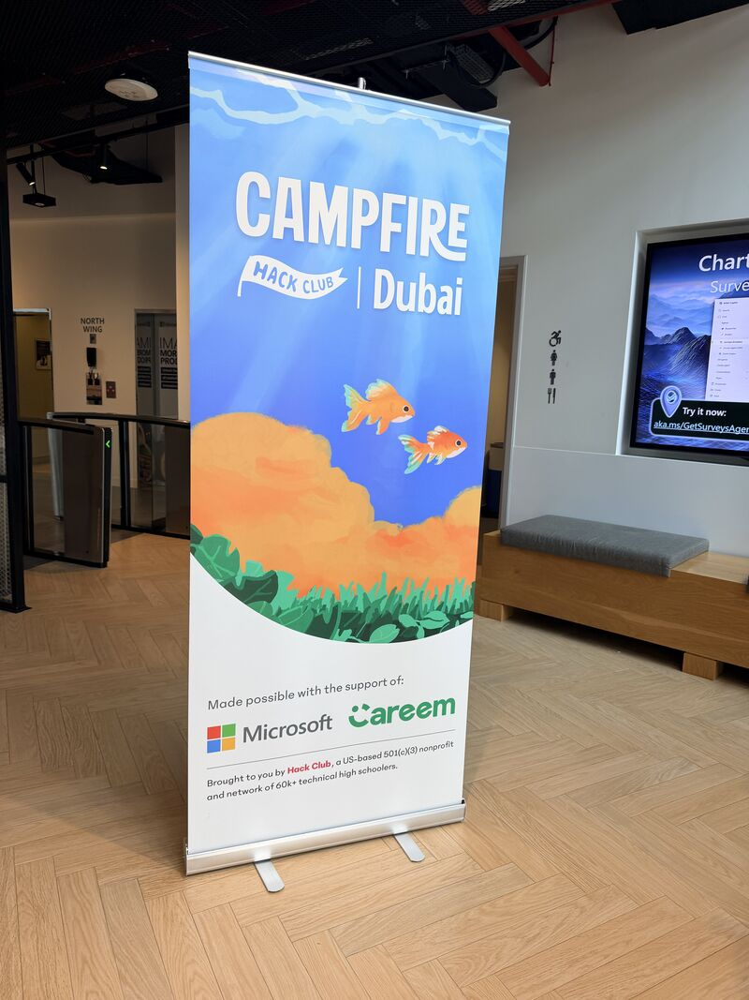
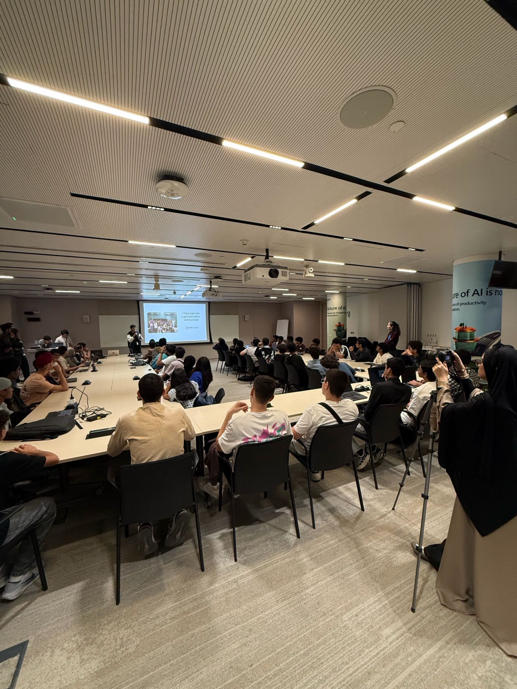
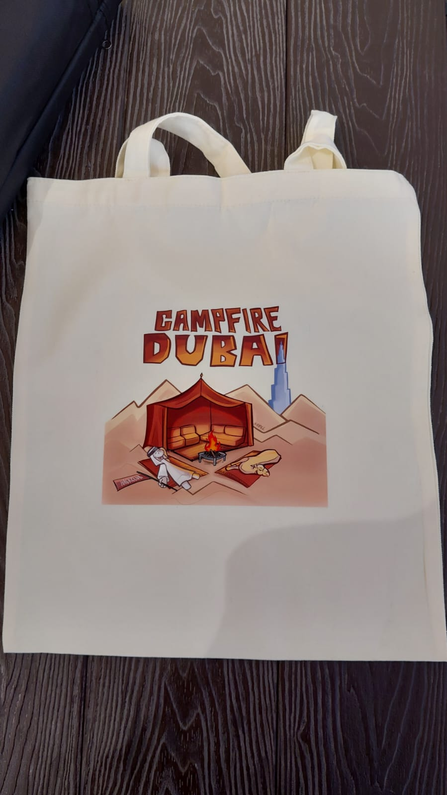
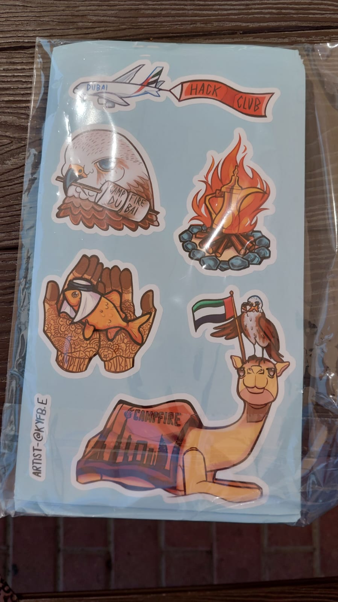
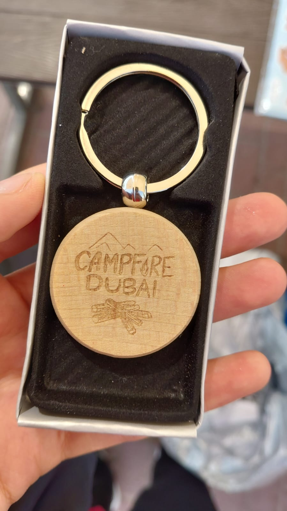

In November 2025, Hack Club announced Campfire — their next satellite game jam that would run in 200+ cities around the world in late Feb 2026.
So.. I signed up to organise one in Dubai.
The two months leading up to Campfire Dubai were a buzz. I was sending emails to venues, sponsors, and attendees; designing posters, banners, and Instagram posts; coordinating with our merch supplier; and doing so much more.
I learnt soo much throughout the whole process too! I had absolutely no idea how to do half the things I listed above before this.
My favourite thing to work on might've actually been our merch. My friend Zeina made the amazing designs, and for a while I was terrified we wouldn't be able to actually order them in time. (ó﹏ò｡)



The day of the event finally came around and... wait.. people actually showed up??
We had 45 attendees and I couldn't believe it. I had a team I could rely on, an incredible venue (thank u microsoft!!), and the energy in the room was amazing.
It couldn't be more perfect.



I was honestly a total wreck after Campfire.
It felt like two months of work went down the drain. I mean did I really put in all this time, effort and passion only for everything to come crashing down less than 3 hours into the event?
I spent a lot of time reflecting. I was disappointed by the outcome, but didn't regret the journey. I genuinely learnt so much and gained so many skills I wouldn't have gained elsewhere. In that aspect, Campfire Dubai was a win in my book.
This isn't the end though! I definitely plan to reschedule, otherwise I wouldn't know what to do with the $700 of Campfire stuff lying in the corner of my room.
We'll see how that goes. For now, the storm rages on.
~Aly
10/03/2026
miscellaneous afterthoughts —